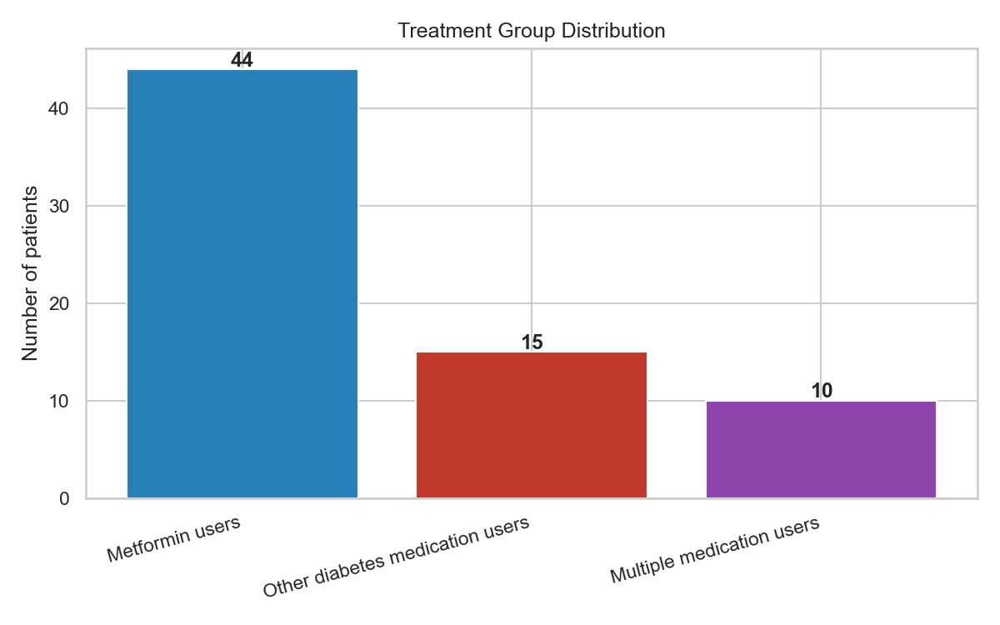
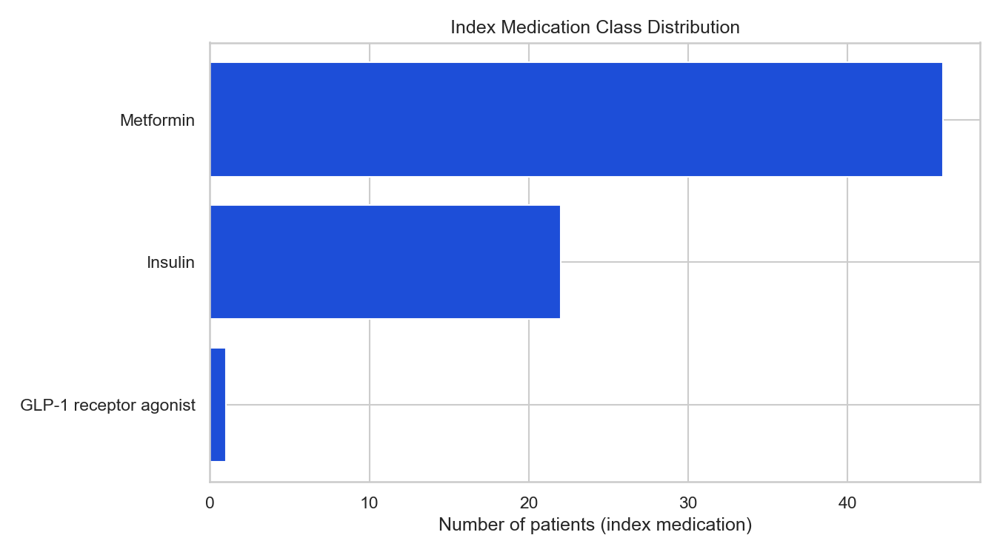
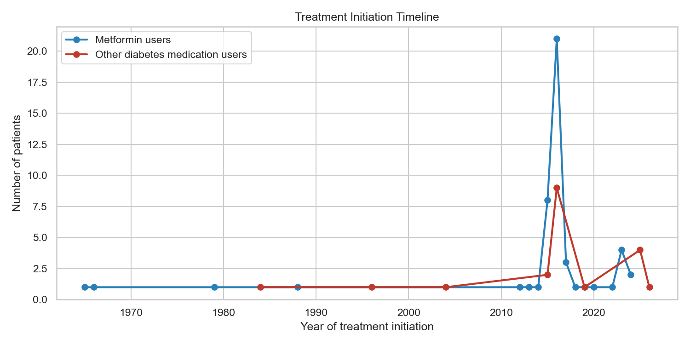

Step 4 — Synthetic RWE Diabetes Treatment Study
Study population N = 69
Group A (Metformin users): Index diabetes medication class = Metformin.
Group B (Other diabetes medication users): Index medication is any other glucose-lowering agent (insulin, GLP-1, sulfonylurea, etc.).
Multiple medication users: Received both metformin and a non-metformin diabetes medication during follow-up (descriptive category for exposure complexity).
Index treatment date: First diabetes medication exposure date after T2DM diagnosis (aligned with Step 2 index_date).
(?i)metformin(?i)insulin(?i)liraglutide|semaglutide|exenatide|dulaglutide(?i)empagliflozin|dapagliflozin|canagliflozin(?i)sitagliptin|saxagliptin|linagliptin(?i)glipizide|glyburide|glimepiride|glipizide(?i)pioglitazone|rosiglitazone(?i)repaglinide|nateglinideClassification is applied to the DESCRIPTION field in medications.csv using
case-insensitive regular expression matching.
| treatment_group | n_patients | percentage |
|---|---|---|
| Metformin users | 44 | 63.8 |
| Other diabetes medication users | 15 | 21.7 |
| Multiple medication users | 10 | 14.5 |
| Metformin users (assigned at index) | 49 | 71.0 |
| Other diabetes medication users (assigned at index) | 20 | 29.0 |
| medication_class | n_patients | percentage |
|---|---|---|
| Metformin | 46 | 66.7 |
| Insulin | 22 | 31.9 |
| GLP-1 receptor agonist | 1 | 1.4 |
Patients with treatment switch: 18 (26.1%)
Patients with multiple medication classes: 18 (26.1%)


